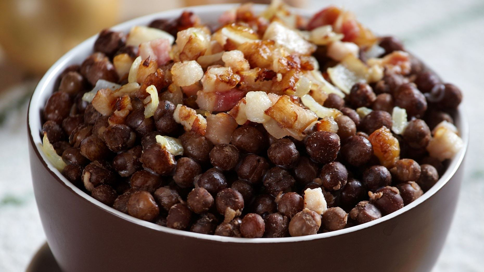

Grey peas with meat and onions

Grey peas is one of the most popular Latvian dishes.
| Preparation time: |
2:00 |
| Cooking time: |
1:30 |
| Total time: |
3:30 |
| Servings: |
10 |
| Calories: |
400 |
| Category: |
Lunch |
| Cuisine: |
Latvian |
| By: |
Jānis Ozoliņš |
Ingredients
- 1 kg of grey beans
- 2 onions
- 0.5 kg of pork
- 1/2 tablespoon salt
Step-by-Step Instructions
- Peas preparation - Soak peas for several hours. Drain the water, pour fresh, add salt and cook for about one hour.
- Fry meat - Сut pork with fat into small pieces, fry until almost cooked.
- Add onions - Chop onions, fry it with meat until done.
- Mix everything - Add meat with onions to peas and mix it.
- Serving - Serve with kefir(fermented milk drink)